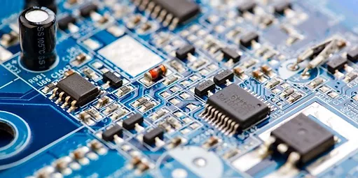

TARJETA MADRE - BOARD
¿Qué es?
La tarjeta madre, es la placa principal en la estructura interna del computador donde se encuentran los circuitos electrónicos, el procesador, las memorias y las conexiones principales. Al referirse a la placa base, se habla de un tipo de tecnología que ha estado presente desde el inicio de la historia de las computadoras hasta la actualidad. En ella se conectan todos los componentes del computador teniendo como función principal controlar todos los elementos del servidor para brindarle un funcionamiento óptimo al usuario. De ella depende que dichos componentes estén bien comunicados unos de otros para garantizar el funcionamiento del sistema.
FUNCIONES
La función de la tarjeta madre, de manera general, es encargarse de la operativida total del ordenador, esto lo realiza mediante las siguientes acciones:
SUS PARTES
HISTORIA
El primer equipo considerado PC fue el IBM modelo 5150 (que montaba lo que llamaron “breadboard”, presentado el 12 de agosto de 1981, aunque fue la quinta generación de computadoras de la marca. Fue creado por un equipo de ingenieros de IBM dirigidos por Don Estridge y William C. Lowe. Hasta la creación de la placa base, la integración del resto de componentes en el ordenador personal se realizaba mediante placas con múltiples bahías de conexión o directamente con cables que hacían de puente entre componentes.
De cara al usuario, esto complicaba bastante las cosas puesto que si necesitaba cambiar una pieza de hardware determinada, como decíamos antes habría que reescribir el firmware con las instrucciones necesarias para que el nuevo componente pudiera funcionar con el resto del hardware.
Con estos problemas entra en escena Patty McHugh, considerada madre de la placa base (mother of the motherboard), una ingeniera de IBM que a finales de los 80 creó el concepto de placa base modular que conocemos hoy en día (si bien es cierto que lógicamente algo más tosco). La creación de la placa base simplificó muchísimo la manera en la que los componentes de hardware interactuaban los unos con los otros, pues desde ese momento solo era necesario cargar los drivers del nuevo componente que queríamos instalar para que todo funcionara.
Esto fue el inicio de todo. La invención de la placa base supuso que ya no hacía falta un grupo de ingenieros de hardware y software trabajando en conjunto para crear un ordenador, sino que cualquiera con unos conocimientos mínimos podía comprar un nuevo componente e instalarlo él mismo. A partir de ese momento los fabricantes vieron las puertas abiertas a la fabricación y comercialización de componentes de hardware, así como de equipos clónicos al PC de IBM.
Está claro que en estos más de 35 años las cosas han evolucionado mucho, pero también está claro que el diseño de placa base modular que IBM creó a finales de los años 80 es, en esencia, exactamente igual que el que utilizamos en las placas base modernas. Se han ido añadiendo cada vez más cosas a éstas, especialmente controladores y demás, descargando así de trabajo al procesador, con el añadido de que a día de hoy las placas base son casi universales mientras se respete el formato (es decir, una placa de socket 1151 no admite un procesador AMD, pero sí cualquier procesador de socket 1151 generalmente, y por ejemplo cualquier tarjeta gráfica PCI-Express o disco duro SATA es compatible).